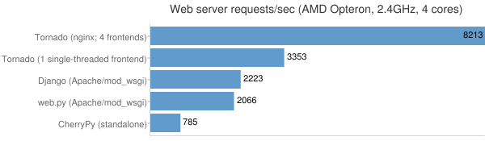

1.1 Tornado是为何物
Tornado全称Tornado Web Server，是一个用Python语言写成的Web服务器兼Web应用框架，由FriendFeed公司在自己的网站FriendFeed中使用，被Facebook收购以后框架在2009年9月以开源软件形式开放给大众。
特点：
- 作为Web框架，是一个轻量级的Web框架，类似于另一个Python web框架Web.py，其拥有异步非阻塞IO的处理方式。
- 作为Web服务器，Tornado有较为出色的抗负载能力，官方用nginx反向代理的方式部署Tornado和其它Python web应用框架进行对比，结果最大浏览量超过第二名近40%。
性能： Tornado有着优异的性能。它试图解决C10k问题，即处理大于或等于一万的并发，下表是和一些其他Web框架与服务器的对比:

Tornado框架和服务器一起组成一个WSGI的全栈替代品。单独在WSGI容器中使用tornado网络框架或者tornaod http服务器，有一定的局限性，为了最大化的利用tornado的性能，推荐同时使用tornaod的网络框架和HTTP服务器